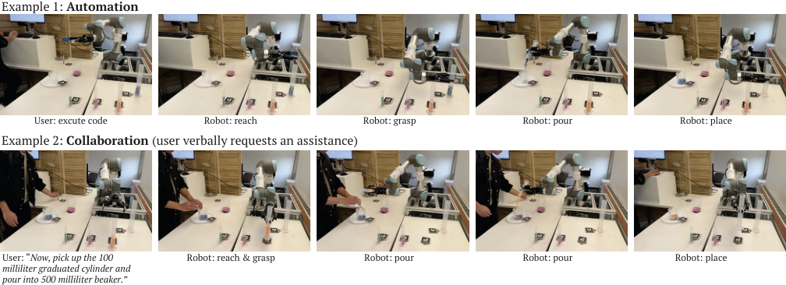
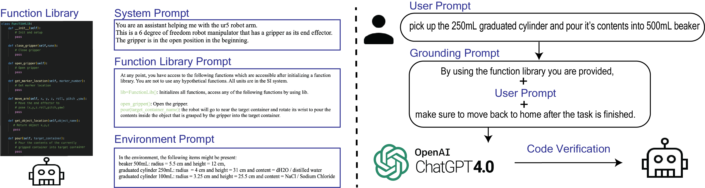

Studio / Alchemist
Alchemist
Alchemist: LLM-Aided End-User Development of Robot Applications
Ulas Berk Karli, Juo-Tung Chen, Victor Nikhil Antony, and Chien-Ming Huang

Large Language Models (LLMs) have the potential to catalyze a paradigm shift in end-user robot programming: moving from the conventional process of user specifying programming logic to an iterative, collaborative process in which the user specifies desired program outcomes while the LLM produces detailed specifications.
We introduce a novel integrated development system, Alchemist, that leverages LLMs to empower end-users in creating, testing, and running robot programs using natural language inputs, aiming to reduce the required knowledge for developing robot applications.
We present a detailed examination of our system design and an exploratory study involving true end-users to assess capabilities, usability, and limitations of our system, and derive a set of lessons learned from the use of LLMs in robot programming.
Design objectives
Approaches for lowering barriers to programming robots include behaviour trees, illustration-based, flow-based and block-based systems, and programming by demonstration. However, these abstractions still require an understanding and explicit specification of the programming logic, which presents a significant barrier. We outlined five core design objectives (DO) for Alchemist.
Facilitate programming with natural language
Use LLMs to facilitate an intuitive robot programming experience through natural language communication, reducing the need for programmatic thinking of end-users.
Enable an end-to-end development workflow
Robot programming is a complex multi-step process. Alchemist provides a one-stop shop for development, testing, debugging, and execution of robot programs.
Support varied programming proficiencies
A dynamic framework adjusts the level of code generation abstraction, from flexible, general-purpose code that requires more oversight to rigid, task-specific code that demands minimal oversight.
Visualize robot world and actions
Robot programs have real-world physical outcomes. We visualize the real-time robot world model and enable preview of actions to prioritize user understanding, control and safety.
Ensure system modularity
Accommodate various LLMs and robot platforms with ease, adapting to evolving needs or technological updates without altering the interaction paradigm.
System overview
Users initiate the robot programming process by placing AR markers to identify objects of interest in the robot’s workspace; these markers let the system track, update, and visualize the robot’s world model. Users then prompt the LLM to generate code via the Chat Panel, edit and debug the generated programs by prompting the LLM further or by using the Editor, and preview, execute and test the programs via the Terminal Panel.
Alchemist is designed to be robot-platform and LLM agnostic. The initial release provides implementations for two manipulators (Universal Robots UR5 and Franka Emika Panda) and one mobile manipulator (PAL Robotics TIAGo). It has two distinct task-level capabilities.
Automation
Users can automate entire processes, either by breaking tasks into smaller sub-tasks and creating code for each, or by devising a single comprehensive program for the entire task; this choice depends on user preference and task complexity.
Collaboration
Users can verbally instruct the system to execute specific actions that aid them in task completion, or specify how or when the system should act in response to user actions or changes in the environment.

Front-end components
We designed Alchemist’s interface to be plain and functional to simplify the programming process. It consists of three primary panels and two supplementary panels. The supplementary panels are hidden by default to prevent users from feeling overwhelmed by an excessive array of panels and code.
3D Visualization Panel
An embedded RViz interface visualizes the robot’s physical environment as known to the motion planning system, so users can identify and address discrepancies between the physical and virtual worlds. Paired with a Gazebo ROS node, it can act as a fully simulated environment.
Chat Panel
Users interact with the LLM to generate the code required for their tasks. Once the LLM generates code and provides an explanation, only the explanation is presented in the chat history. Voice input is supported through speech-to-text using OpenAI’s Whisper.
Terminal Panel
A Python terminal enriched with built-in functions that let users inspect, run, and save code and reset the system as needed.
Text Editor and File Tree
A text editor with syntax highlighting for Python, and a file tree that displays files generated by the LLM and saved by the user, so they can rerun these files through the terminal.
Back-end components
Alchemist’s back-end has three components: a Function Library, LLM initialization prompting, and code safety mechanisms. For the initial release and exploratory study, we employed OpenAI’s GPT-4.


Function library
A platform-specific layer of abstraction over underlying ROS functions and services. The LLM is instructed to use only these functions. High-level functions such as pour(target_name) support novice users; low-level functions such as move(x,y,z,roll,pitch,yaw) are more versatile but more error-prone.
Initial prompt
The LLM is instructed to act as a robot programming helper and is given a function library prompt that acts as descriptive code documentation, an environment prompt listing the physical objects in the workspace, and an example user prompt with the corresponding code output.
Grounded prompting
“By using the function library you are provided,” is added to the beginning of each prompt to prevent the LLM from using imaginary functions, and “make sure to move back to home after the task is finished.” is added to the end. Conditional groundings are added when words such as “add” or “pour” appear.
Code verification
Generated code is examined and corrected for general issues such as imports, ROS node and function library initialization, and Python version, so that it does not include errors resulting in failure of code interpretation.
Exploratory study
Integrating robotic assistants in life sciences laboratories is emerging as a promising application domain, yet experts in life sciences rarely have experience programming or working with robots. We based our task on the LB Media preparation experiment, which is performed to create plates for growing live cultures in biochemistry labs.
We modified the task into a toy experiment by replacing reagents with beads and glass lab equipment with plastic. At a high level, the task is about picking various graduated cylinders that hold different reagents and pouring them into a beaker to create a mixture.
Participants
5 graduate students or postdocs in biology, chemistry and biophysics (“novices”), and 5 graduate students in robotics (“experts”).
Procedure
After a user manual, tutorial video, and training task, participants worked independently on the main task. They were asked to generate general functions for re-usability, but could choose step-by-step prompting.
Measures
System Usability Scale (SUS), a semi-structured interview, and measures labeled from video and screen recordings, such as programming, debugging, and idle time.
Reported measures by user expertise level
Group means. Idle time is time spent on the task other than using the system, such as thinking or reading the user manual.
| Group | Programming time | Debugging time | Idle time | Task completion | Errors | SUS |
|---|---|---|---|---|---|---|
| Novices | 00:23:09 | 00:13:40 | 00:26:13 | 1:03:02 | 1.8 | 56 |
| Experts | 00:16:41 | 00:06:38 | 00:43:27 | 1:01:59 | 1.8 | 68.5 |
Findings
We observed some interesting similarities and differences in how novice and expert users interacted with the system.
Task completion time
Novices and experts had similar average task completion times, which might be due to different prior knowledge: one group knew the task well, the other knew coding and robots. Experts on average took less time programming and debugging but more idle time.
Debugging method
Novice users tended to debug their program by prompting the LLM further instead of using the editor, avoiding directly dealing with code due to their unfamiliarity. Most experts debugged by editing the code.
General functions
Novice participants tended to give step-by-step instructions instead of using general functions, while experts tended to create generic functions and reuse them.
Reliability
The main limitations arose from problems with motion planning and visual perception, causing failures in robot action independent of the generated code. Code verification decreased errors, but they were not completely eliminated.
“pour the water from the 250ml graduated cylinder to the 500ml beaker. Put the 250ml graduated cylinder back to its original place gently.”
Prompt by novice N3
“Can you write a generic function called ‘pick_and_pour’, which allows me to insert the input, and the robot will based on the input to grab the target and pour it into the 500mL beaker?”
Prompt by expert E1, for the same task
“I think the idea behind this project is really novel. It can be used extensively, especially in biochemistry labs, where tasks like these are a frequent occurrence.”
Novice participant N5
“I would love to have a liquid handling system in our lab where I could simply press a button and say ‘go’ without worrying about it failing, but I don’t think it’s at that stage yet.”
Novice participant N4
Lessons learned
Our system design and development process, along with our observations in the exploratory study, elucidated a range of effective practices for and limitations of our end-user programming approach.
LLMs can output unreliable code
Code verification helped eliminate most interpretation errors, and grounded prompting helped reduce execution errors; some errors still persisted. Enhancing LLM-generated code reliability is critical for end-user robot programming.
Effective LLM prompting is difficult
Users with an incomplete understanding of the LLM often write vague or implicit prompts. Effective prompting requires end-user training and dynamic context-dependent prompt enhancement.
End-user aversion to direct coding
Novice users tended to avoid directly viewing and editing code. Introducing abstractions to minimize code complexities while retaining programmatic expressiveness can enhance user confidence.